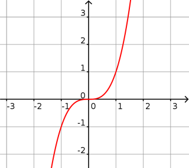

Définition : La fonction cube est définie sur ℝ par : $f(x)=x^3$.
Propriétés : La fonction cube est impaire. Elle est croissante sur ℝ.
Courbe :

Limites :
$\displaystyle{\lim_{x \to - \infty} (x^3) = - \infty}$
$\displaystyle{\lim_{x \to + \infty} (x^3) = + \infty }$
Exemple 1 :
Soit $f_1(x)=2-x^3$.
Par soustraction : $\displaystyle{\lim_{x \to - \infty} f_1(x) = + \infty}$.
Exemple 2 :
Soit $f_2(x)=x^3+7$.
Par somme : $\displaystyle{\lim_{x \to + \infty} f_2(x) = + \infty}$.
Dérivée :
$f$ est dérivable sur ℝ et :
$f'(x)=3x^2$.
Exemple 3 :
Soit $T_1$ la tangente à la courbe de la fonction cube
au point d'abscisse $1$ et $T_2$ au point d'abscisse $2$.
Le coefficient directeur de $T_1$ est $f'(1)=3 \times 1^2 = 3$.
Le coefficient directeur de $T_2$ est $f'(2)=3 \times 2^2 = 12$.